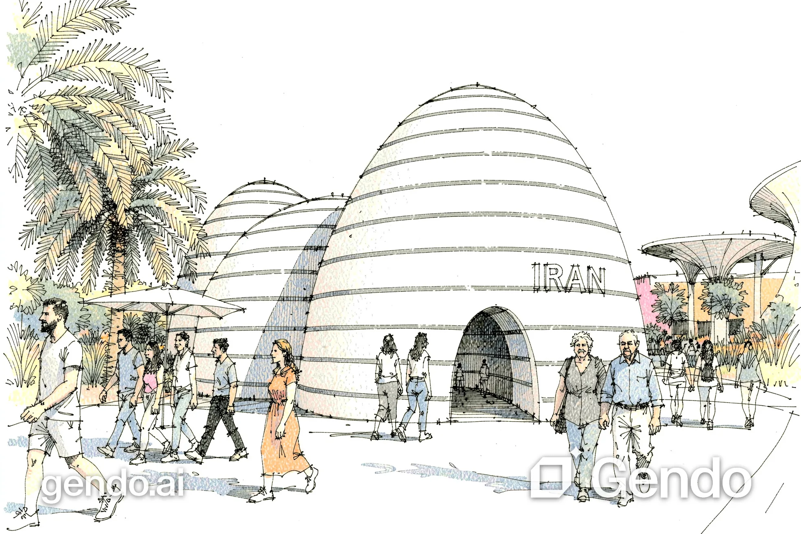

Iran Pavilion
Concept
The Iran Pavilion at Dubai Expo is inspired by the natural landscape of Kenarak in Sistan and Baluchestan. The project combines traditional Iranian architecture, earth-based construction, and cultural heritage to create an immersive experience. Through interactive galleries, Persian art, poetry, music, pottery, and dance, the pavilion introduces Iran’s rich cultural identity while establishing a connection between architecture, nature, and tradition.
Project film
Plays when it scrolls into view. Pick a scene to jump straight to it.
Design approach
The Iran Pavilion is inspired by the unique landscape of Kenarak in Sistan and Baluchestan, where desert dunes, turquoise water, mountains, and vegetation meet. The design combines nature, traditional Iranian architecture, and cultural heritage to create an immersive experience through light, water, sound, and interactive exhibition spaces.
Super adobe Structural System
Super adobe is an earth-based construction technique developed by Iranian architect Nader Khalili. It uses long polypropylene bags filled with compacted earth to create load-bearing walls and dome-shaped structures. This system connects contemporary architecture with traditional Iranian building methods while offering thermal mass and the potential to reduce reliance on conventional construction materials.
Galleries
Entrance
The entrance features a domed ceiling decorated with traditional Iranian mirror work. Reflective surfaces and a water feature create dynamic light effects, welcoming visitors into the pavilion and introducing its cultural identity.
Shahr-e Farang Gallery
Inspired by a traditional Iranian visual entertainment device, this gallery uses small wall openings to reveal scenes of Iranian culture and history. Subtle lighting, an underground water feature, and a candle-lighting niche create a mysterious and interactive experience.
Carpet Gallery
This L-shaped corridor is inspired by traditional Iranian houses. A Persian carpet is integrated into the wall for visitors to touch, while natural light, candlelight, and floral fragrances create a multisensory introduction to Iranian craftsmanship.
Kenarak Gallery
The Konarak Gallery features four earthen hills, each representing an aspect of Iranian culture: Persian poetry, traditional pottery, Iranian music, and folk dance. Visitors walk barefoot through water and sand, interact with performers, listen to poetry and music, and experience traditional crafts. The hills are accessible, allowing visitors to climb up and sit alongside performers, creating an immersive cultural experience inspired by the coastal atmosphere of Kenarak.
Drawings
Plans, sections and diagrams from the original portfolio. Click to open; click again or scroll to zoom.
Perspectives
Renderings from the original portfolio, captioned as they appear there.
References
Reference images used in the original design-process pages.
More views
15 AI visualisations generated in earlier portfolio work from the original plans, sections and model views. Fine details are illustrative — the original drawings remain authoritative.

Next project — 01